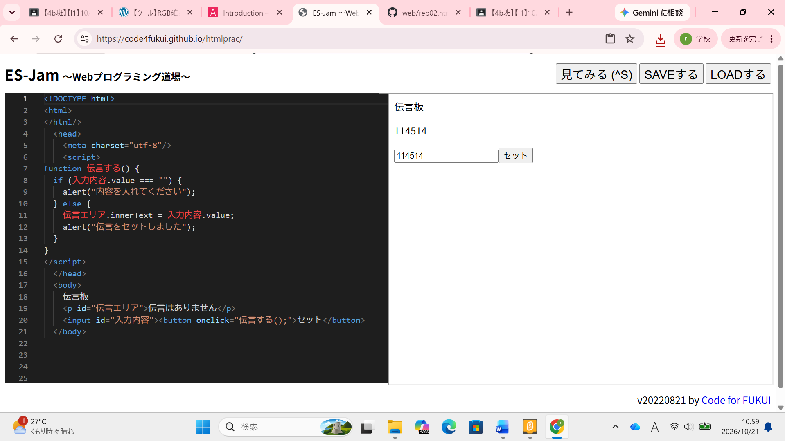

3-2 JavaScript体験：伝言プログラムを作る

伝言板
1.内容 実際にマニュアルと、先生の話を聞きながら伝言板プログラムを作る。
改行の仕方に加えて、動作対象ごとに与えるプログラムをくくる方法、tabキーの使い方を覚えた。
スクラッチの「もし○○なら」などに当たる入力の仕方も覚えた。
2.感想
文字の羅列だけで、パソコンの動きを制御することができており、わかってはいても驚いてしまう。伝言板を見て、
アプリやwebページの裏側が想像できたら、面白そうに感じた。2年生に上がるまでに少しでもプログラミングに慣れておこうと思った。
しかし今回、自分が致命的にタイピングが遅いことに気づいたためそちらを優先する。今のところI1の実験が一番楽しい。